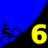

|
| Aerial photo of Jamison Creek Rd, courtesy of Stanford Cycling |
|  |
2008 Low-Key Hillclimbs Week 6: Jamison Creek Rd 08 Nov 2008 |
|
| Aerial photo of Jamison Creek Rd, courtesy of Stanford Cycling |
Competing with Alba for the status of the toughest climb to Empire Grade (the others being Felton Empire, Bonny Doon, and Empire Grade itself), Jamison Creek emerges from the gorgeous Redwoods of Big Basin for a memorable trip to Empire Grade on the ridge of the Santa Cruz mountains. The net statistics are impressive enough: 1420 feet at a daunting 9.0%. However, the real devil's in the details: after an opening 1.3 miles at a humane 5%, things get serious: the remaining 1.7 miles average 11.5%, with sections closer to 14%. This one shouldn't be missed.
Our insurance demands it: helmets are required. Sorry kids, no exceptions!
We'll meet for registration at the fire station near Jamison Creek Road and Highway 236. However, this is a poor place to park. Instead, it is recommended you park in nearby Boulder Creek, where there are plenty of opportunities. Or, there's parking for 35 cars at the dirt parking lot at the country club. It's short ride to Jamison Creek Road. Bathrooms avaliable at the country club at the Club House.
| stats | 3 miles, 1420 feet, 9.0% |
| format | mass start |
| time | reg 9:15 - 10:00 start 10:10am |
| coordinator | |
| aerial view | Stanford Cycling |
| route profile | Motionbased profile |
| weather | Weather Underground Weather Bonk Weather.com 10-day |
| registration form |
PDF release form |
| entry fee | $10 voluntary donation free for juniors 2 free for volunteers free for coordinators |

{kind=link}